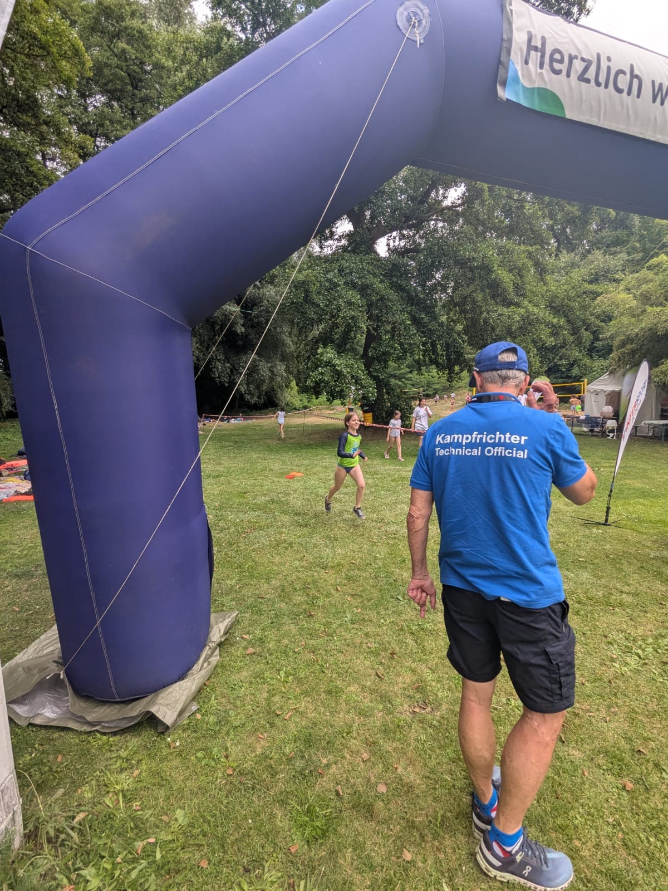
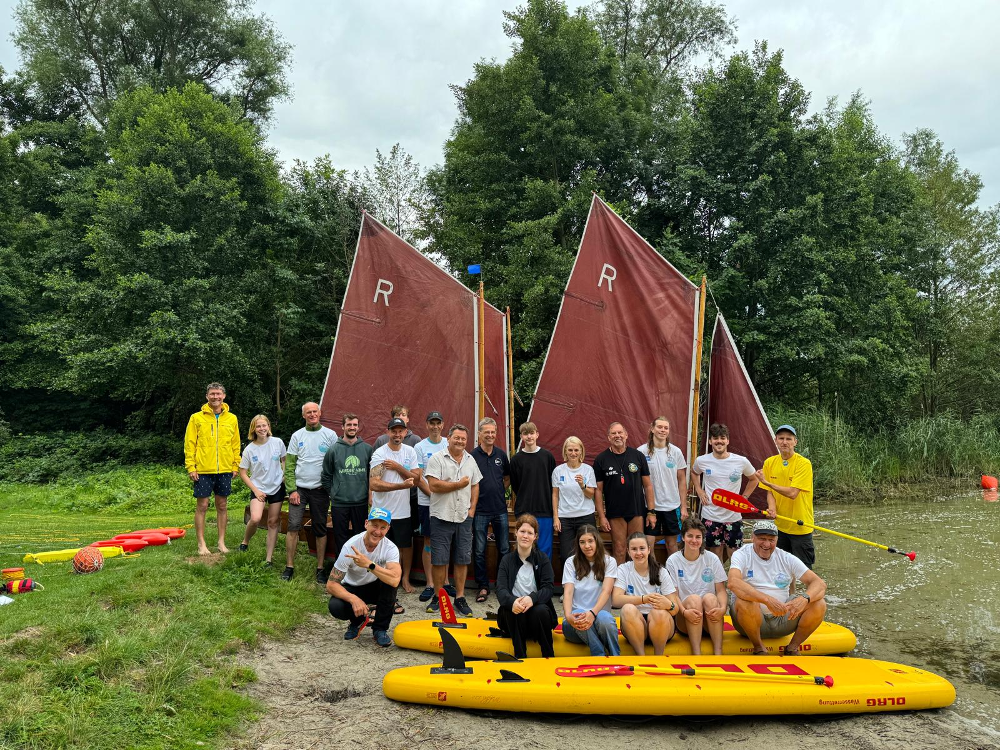
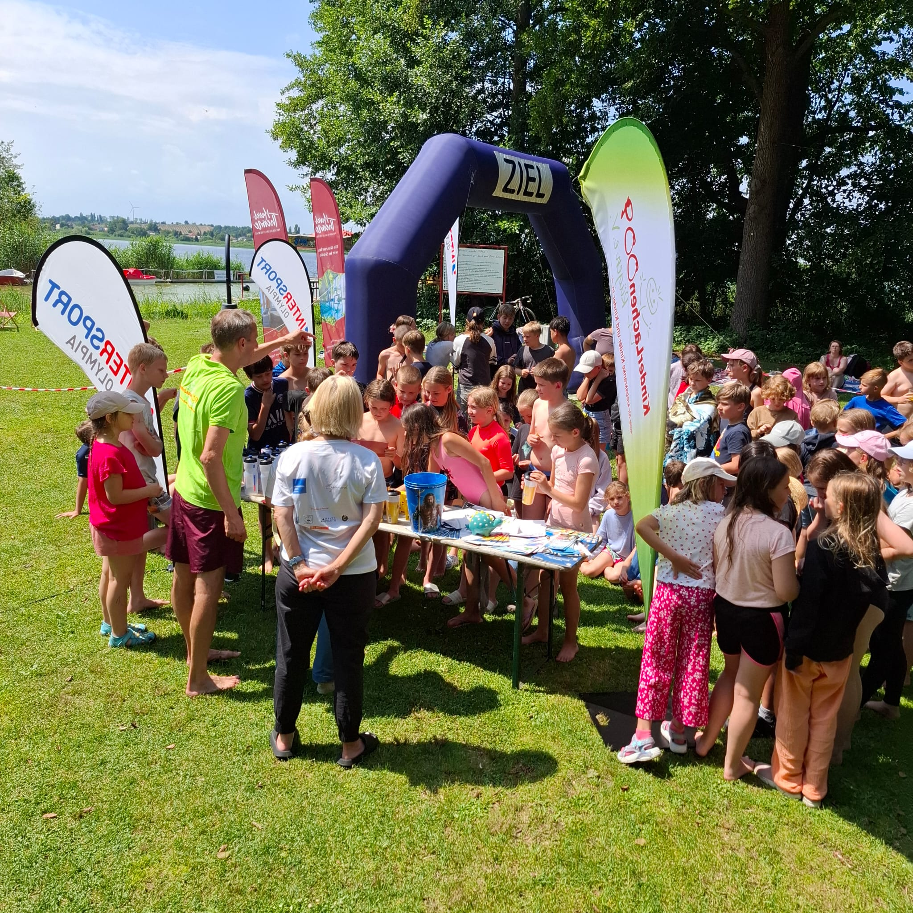
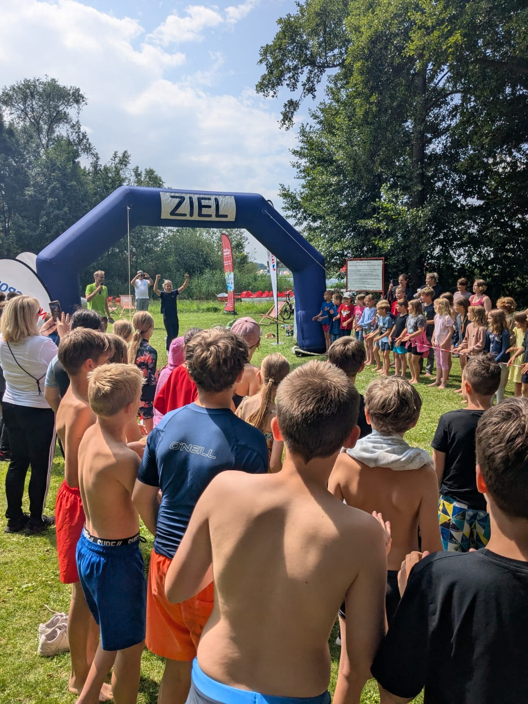
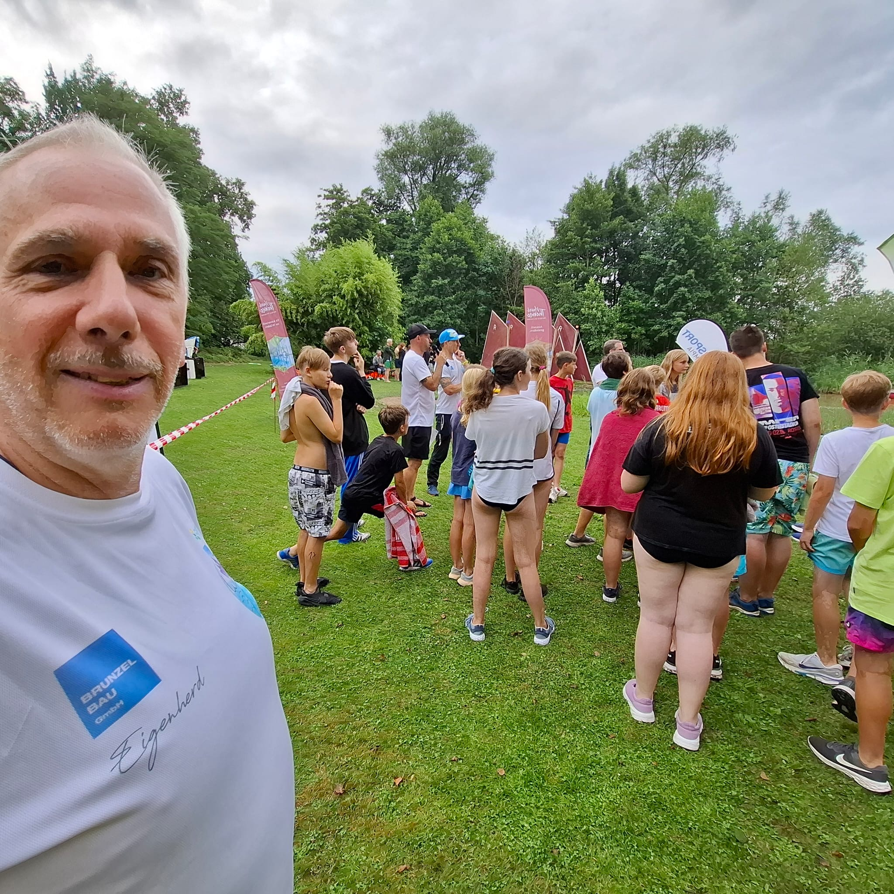
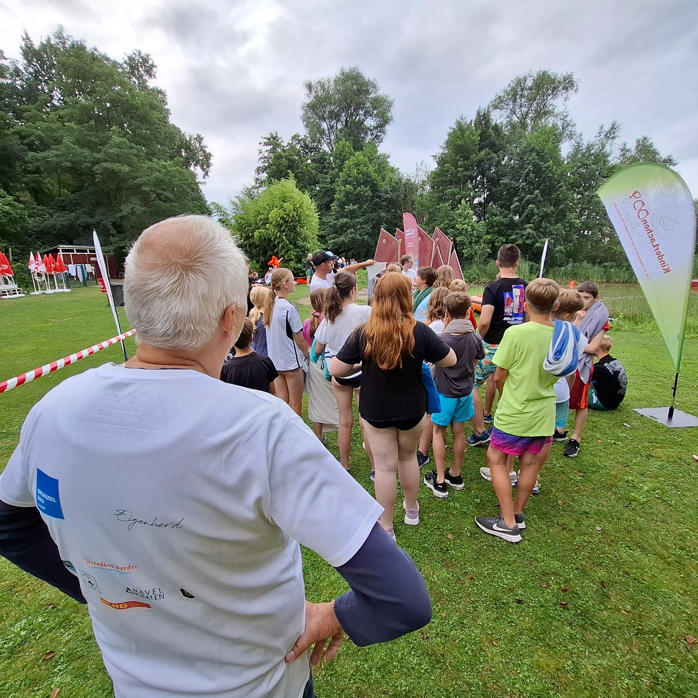

Die Werderaner Wassertage leistet einen Beitrag zur Bewegungsförderung am, auf und im Wasser. Für bis zu 750 Schülerinnen und Schüler ab der 3. Jahrgangsstufe. Kurz vor den Sommerferien sollen schwimmerische Fähigkeiten richtig eingeschätzt werden, um sie langfristig zu verbessern.
Die im Rettungsschwimmen ausgebildeten Schüler der 11. Jahrgangsstufe der Gesamtschule des Hoffbauer Campus Kleinmachnow richten zusammen mit den Vereinen aus der Region im Strandbad am Plessower See eine einladende Wassersportveranstaltung aus.
Vom mobilen Wasserball-Spielfeld der ORCAS bis hin zum Beachvolleyball, Segeln, Swim&Run und Rettungsschwimmen. Ein unvergleichlicher Mitmachcharakter für alle Teilnehmer.
Im vergangenen Jahr konnten über 240 Schülerinnen und Schüler erfolgreich ihre ersten Wassertage erleben. Hier sind einige Highlights:






Erfolge 2025: 242 Schüler*innen • 125 Triathlonabzeichen • 20 Rettungsschwimmlizenzen
Das Anmeldeformular für Schulklassen (PDF) steht in Kürze zur Verfügung.
Teilnahmegebühr: 2,40 € (Badeintritt) je Tag.
Bei Fragen kontaktieren Sie uns unter: christianprochnow@gmx.de